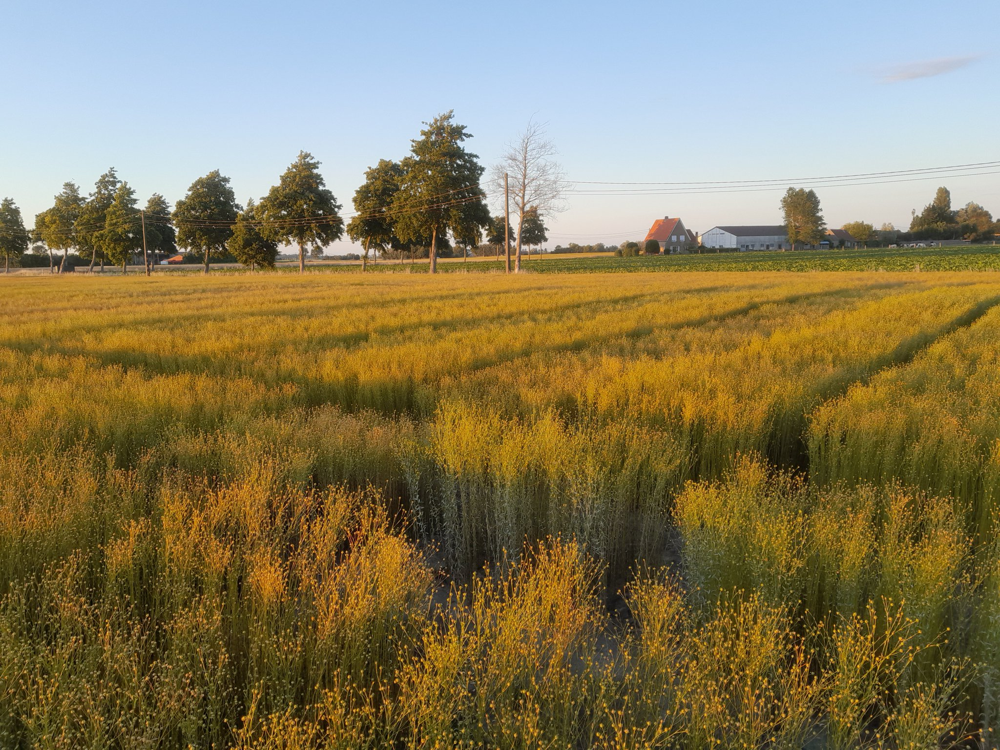

Kroten
Stevige en kwalitatieve vlasbundels, zorgvuldig verwerkt en geleverd met aandacht voor betrouwbaarheid.
Familiebedrijf sinds 1995
Agralin is een Belgisch familiebedrijf uit Ingelmunster, gespecialiseerd in de verwerking van vlas en de verkoop van kroten, lijnzaad en verwerkt vlas. Wij staan voor eerlijke communicatie, betrouwbare service en een constante focus op kwaliteit.
Over Agralin
Sinds 18 juli 1995 bouwt Agralin aan een sterke reputatie binnen de lokale landbouw- en vlasverwerkende sector. Als familiebedrijf combineren wij ervaring, betrokkenheid en een persoonlijke aanpak met een duidelijke belofte: kwaliteit leveren en correct communiceren over elk product.
Wij werken voornamelijk voor B2B-klanten, landbouwers en agrarische ondernemingen die op zoek zijn naar een partner waarop ze kunnen rekenen.
Lees meer over ons verhaal
Onze producten
Agralin legt de nadruk niet op verschillende kwaliteitsniveaus, maar op een consequente en zo hoog mogelijke standaard.
Stevige en kwalitatieve vlasbundels, zorgvuldig verwerkt en geleverd met aandacht voor betrouwbaarheid.

Lijnzaad met focus op degelijke kwaliteit en een correcte service voor landbouw- en professionele toepassingen.

Professioneel verwerkt vlas voor klanten die waarde hechten aan continuïteit, helderheid en vakkennis.
Waarom Agralin
Decennialange ervaring in vlasverwerking en samenwerking met professionele klanten.
Als familiebedrijf hechten wij veel belang aan rechtstreeks contact en duurzame relaties.
Wij zijn altijd eerlijk over de kwaliteit van onze producten en over wat klanten mogen verwachten.
Wij leveren service waarop klanten kunnen bouwen, van eerste contact tot levering.
Direct contact
Wenst u meer informatie over onze vlasverwerking, kroten, lijnzaad of verwerkt vlas? Neem rechtstreeks telefonisch contact op voor een snelle en persoonlijke opvolging.